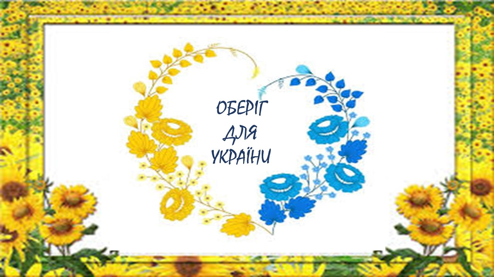

|
Ранок починається однаково... Вже другий рік прокидаєшся, не встигаєш відкрити очі, а руках телефон з новинами. В душі надія побачити ті самі заповітні слова: «Україна перемогла!». Та, на жаль, сьогодні той самий смуток, що і вчора. Проте надія про нашу перемогу не згасає. Вистоїмо!
Сьогодні знову не було світла. Однак, я не скаржусь, ні! Не можна скаржитися в той час, як наші воїни захищають нас: і в дощ, і в холод, під обстрілами, без можливості сходити в душ або в туалет та нормально поїсти.
Ні! Я не скаржусь! Бо знаю, що багато українців знаходиться на окупованих територіях. І над ними жорстоко знущаються звірі. Для ворожого звіра свобода та людське життя - це ніщо.
Я захоплююсь медиками та рятувальниками! Адже вони кожного дня витягають з того світу тисячі життів, які мало не відібрала війна. Дуже важко навіть думати про таке. Серце розривається на мільйон друзків, які не склеїш до купи за все своє життя.
У моїй країні справжнє пекло. А я до сих пір не розумію, для чого ця клята війна?! Знаю лише, що ці нелюди намагаються нас зламати: морально, фізично. Хай намагаються - зламаються самі!
Війна возз’єднала світ і роз'єднала сім'ї. Я бачу, як країни-друзі допомагають нам. Надають зброю, техніку, гуманітарну допомогу. Відкривають кордони для евакуації. Лікують поранених. Народ різних країн проявляє велике співчуття, повагу та доброту до наших співвітчизників. А дехто з них навіть йдуть воювати за нашу землю.
Ні, я не скаржусь! Бо знаю, що є родини, які сумують один за одним на чужині. А ще є сім'ї, які втратили рідних та близьких. Хто їм поверне нормальне щасливе життя?
Ворог так прагне нас знищити, що й досі не усвідомлює, проти кого воює. Проти людей, які на відміну від нього, б’ються за те, чому немає ціни в усьому світі - за Батьківщину, свободу і життя?!
Ні! Нас не здолагати! Ми непереможні! Все буде Україна!
|

Оберіг для нашої неньки України
|